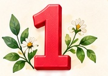
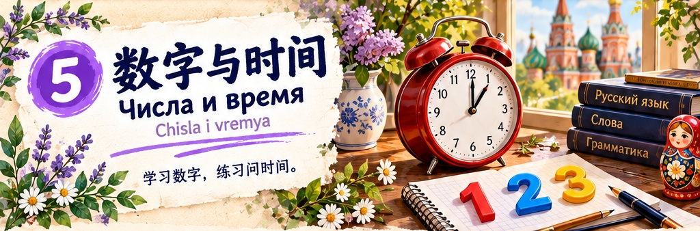
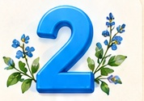
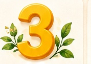
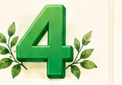
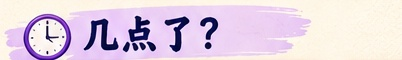

один
odin
一





继续认识数字 · Числа от шести до десяти

3:00 / 4:00 / 6:00 / 7:00 / 10:00 · 学会用 час、часа、часов
一点 → один час；两点到四点 → два / три / четыре часа；五点到十点 → пять / шесть / семь / восемь / девять / десять часов。
听对话，跟着两个声音重复一遍 · 听、读、说
复习本课内容，做个小测验吧！
每题只有一个正确答案。听题目，选择答案，再看解释。
1 → час；2、3、4 → часа；5 → часов。这里的“一点、两点、五点”表示钟点。
拉丁字母是俄语转写，不是汉语拼音。先听录音，再跟读。